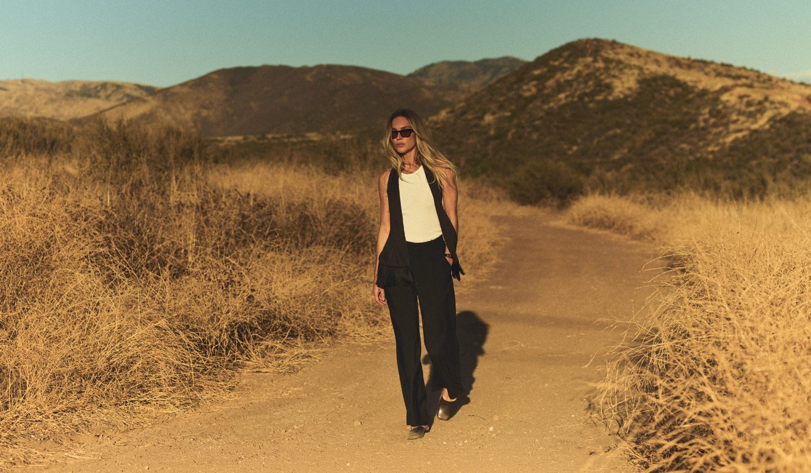
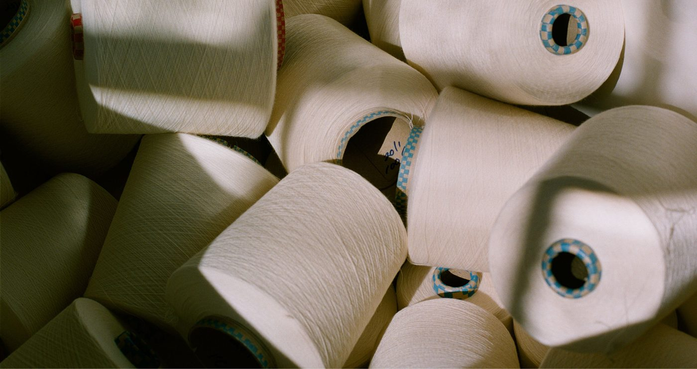
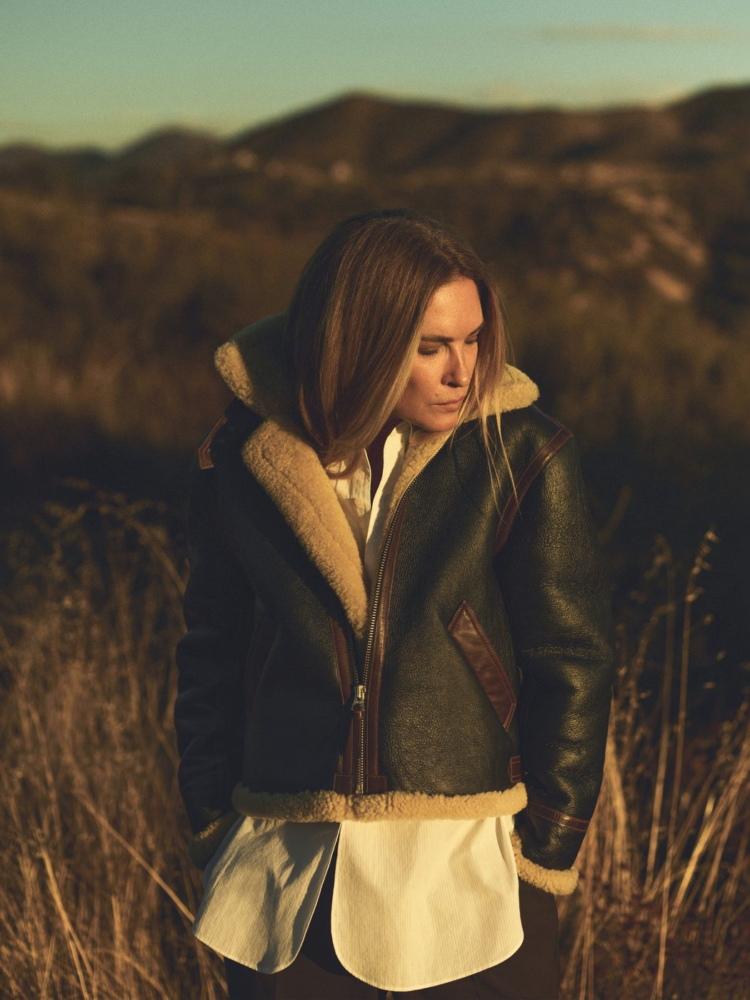
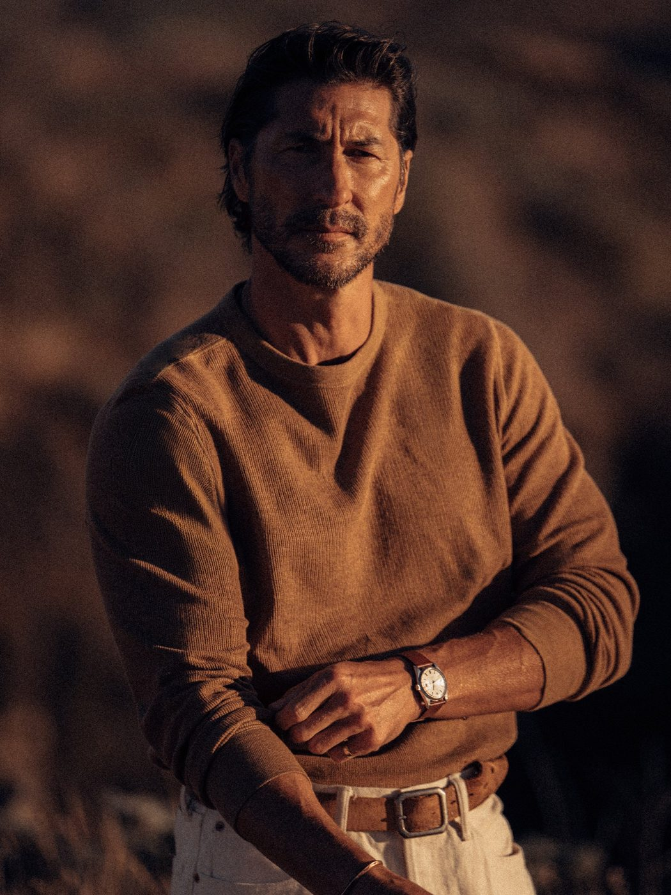

Buck Mason
Company study · 2026-11-16
Sun-warmed and lived-in. California hills at golden hour, olive, saddle and bone, faded denim, wool and corduroy worn loose on easy, unposed people. Mill and yarn shots show where it is made. Positioning: timeless classics meant to outlast the wearer.


(01) (02)
(02)
 (03)
(03)


(04) (05)
(05)


(06)

(07)Palette · measured from images
#352A23#D8D5C7#6C604A#895A39#BE8D51#A3B2A4Visual themes
- California light
- Key motifs: golden-hour hills, dry grass, vintage convertibles, a model’s shadow or sun flare. Sub motifs: desert roads, a stone courtyard, a leather chair.
- Worn-in workwear
- Key motifs: chore coats, selvedge denim with hand-faded creases, double-knee work pants, corduroy, thermal knits. Sub motifs: rolled cuffs, copper rivets, shrunken and loose fits.
- Made in a mill
- Key motifs: yarn cones, knitting machines, hands cutting cloth, mood boards pinned on a wall, black-and-white factory portraits. Sub motifs: numbered yarn racks, a Pennsylvania mill.
- Seasonal drape
- Key motifs: holiday shearling, tuxedo tailoring, silk pajama sets, wool knits on olive or gray fabric backdrops. Sub motifs: warm cream, burgundy and navy.
Hero material
The brand bought a Mohnton, Pennsylvania shirt factory to make its own jersey (https://www.buckmason.com/pages/buck-mason-knitting-mills, retrieved 2026-11-16).
The look is cotton, denim, wool and corduroy that is shown softened by use: fade, crease, felting and loose drape are the selling surface. Close-up at (05).
Visual elements
- Photography
- Natural or low sun, film-like grain and warm grade, unposed walking or leaning poses; muted drape backdrops for studio looks; black-and-white for factory and story images; flats on pale bone for denim.
- Type and graphics
- Acumin Pro Condensed and Acumin Pro as the site faces (site CSS), Overpass Mono for small data, and a custom face named MasonGothic (all from the site CSS).
- Layout habits
- Full-bleed lookbook spreads, paired portrait crops in the journal, tight portrait cards on collection pages, a long editorial journal with item credits under each image.
- Detail
- Faded creases and whiskers, copper rivets, selvedge ID on rolled cuffs, felted and brushed wool, corduroy wale, tonal buttons.
Visual story
A seasonal hero, men and women entries, a Made in USA and Journal link, then product rails; Our Story starts with a 2013 Venice garage, then design, partnerships and stores; the Knitting Mills page tells the mill purchase. The story runs from place (California) to people to making to the garment. Relation to the themes: a strong T9 fit (worn-in basics), since fade, felting and loose drape are shown as the point of the clothes. For T10 it is a partial fit: it names fabrics and owns a mill, but one-piece cloth and engineered surface are not part of its look.
Notable products
- Worn-in selvedge jeans
- Show use as the finish, in the denim close-up.
- Felted wool chore coat
- Carries the loose, brushed, layered fall look.
- Vintage thermal surplus tee
- A basic whose heathered color and knit texture do the work.
- Double-knee canvas work pant
- Heritage workwear shape in a natural canvas.
Method and limits
- Palette basis
- Ten Buck Mason images: campaign and journal photographs (board images (01), (02), (06) and (07) plus six more look images from the holiday journal, the outerwear page and the home page) and the worn-denim flat; k-means in Lab, six clusters kept. Models’ skin tones and the photographed grass are part of the measurement. Black-and-white images were not measured
- Limits
- The site is JavaScript-rendered; the plain fetch gave the Our Story, Knitting Mills and journal text and the product image sets, but not collection grids as the browser shows them. Product-line color analysis was not done.
Credits and licenses
(01) Woman in dark tailoring walking a dry golden hill path, holiday journal. Buck Mason. Brand image, study use. source
(02) Woman in a dark chore coat over white, on an olive drape backdrop, fall 2026 lookbook. Buck Mason. Brand image, study use. source
(03) Two men in work shirt and chore jacket in front of racks of yarn cones, black and white. Buck Mason. Brand image, study use. source
(04) Heap of cream yarn cones, tight crop, warm light. Buck Mason. Brand image, study use. source
(05) Close-up of worn indigo selvedge-style denim with hand-faded creases and whiskers, true color (crop of a 1024 px image). Buck Mason. Brand image, study use. source
(06) Woman in a shearling jacket in dry grass at sunset, holiday shop. Buck Mason. Brand image, study use. source
(07) Man in a rust-ochre knit top, evening sun, wrist watch, hills behind. Buck Mason. Brand image, study use. source